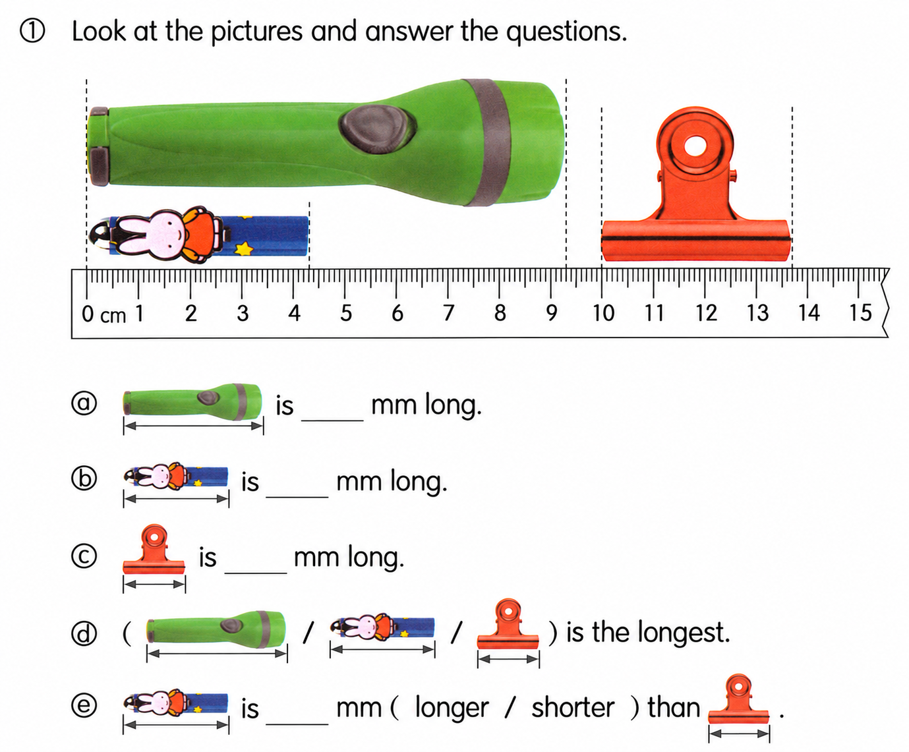
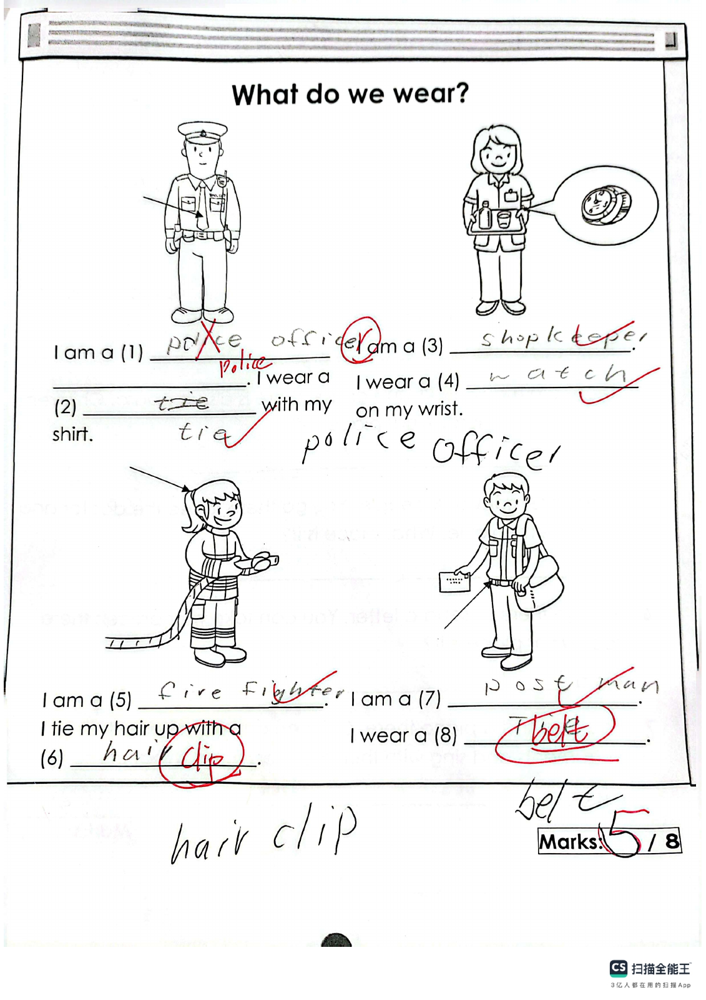
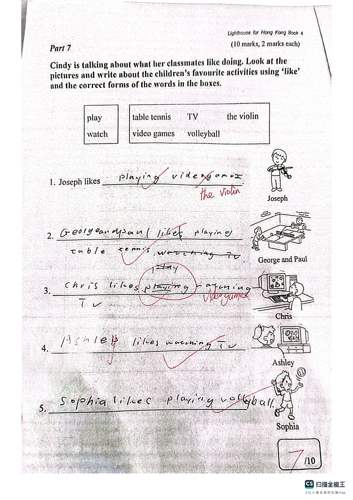
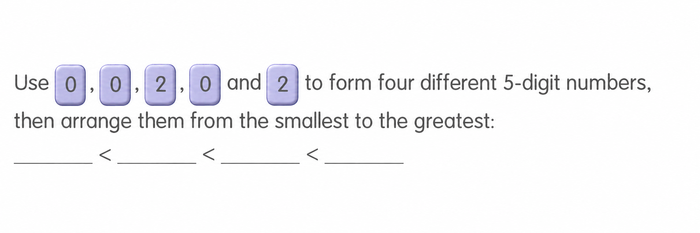
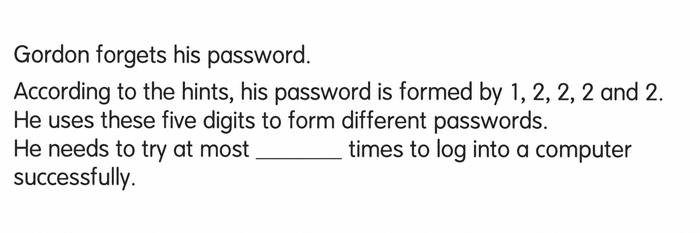

Answer: (a) 93 mm; (b) 43 mm; (c) 37 mm; (d) the torch (first picture); (e) 6 mm, longer
已掌握
| # | 单词/词组 | 中文意思 | 例句/说明 | 已掌握 |
|---|---|---|---|---|
| noun 名词 | ||||
| 1 | owner | 主人 | The dog loves its owner. | |
| 2 | page | 页码 | Please open your book to this page. | |
| 3 | stamp | 邮票 | I put a stamp on the postcard. | |
| 4 | boat | 小船 | The boat is on the water. | |
| 5 | nurse | 护士 | The nurse helps patients. | |
| 6 | housework | 家务 | I help my parents with the housework. | |
| 7 | activity | 活动 | This activity is fun. | |
| 8 | order | 顺序 | Please put them in order. | |
| 9 | dinner | 晚饭 | We eat dinner at home. | |
| 10 | doctor | 医生 | The doctor checked my temperature. | |
| verb 动词 | ||||
| 11 | touch | 触摸 | Do not touch the hot cup. | |
| 12 | feed | 喂养 | I feed my fish every day. | |
| preposition 介词 | ||||
| 13 | opposite | 在......对面 | The library is opposite the school. | |
| phrase 短语 | ||||
| 14 | turn left | 左转 | Turn left at the corner. | |
| 15 | wait a minute | 等一下 | Wait a minute, please. | |
| adjective 形容词 | ||||
| 16 | correct | 正确 | This answer is correct. | |
| adjective/interjection 形容词/感叹词 | ||||
| 17 | welcome | 欢迎 | Welcome to our school. | |
| uncategorized 未分类 | ||||
| 18 | floor | 楼层 | Our classroom is on the second floor. | |
| 19 | win | 赢得 | Our team hopes to win the match. | |
| 20 | diary | 日记 | I write in my diary every evening. | |
| # | 单词/词组 | 中文意思 | 例句/说明 | 已掌握 |
|---|---|---|---|---|
| adjective 形容词 | ||||
| 1 | correct | 正确的 | This answer is correct. | |
| 2 | careful | 小心的；细心的 | Be careful with the knife. | |
| noun 名词 | ||||
| 3 | content | 内容 | This book has interesting content. | |
| 4 | seed | 种子 | The bird pecks a seed. | |
| 5 | mushroom | 蘑菇 | A mushroom is a kind of food. | |
| 6 | crocodile | 鳄鱼 | The crocodile is in the river. | |
| 7 | interviewer | 采访者；面试官 | The interviewer asks questions. | |
| 8 | balloon | 气球 | The red balloon is floating in the air. | |
| 9 | clown | 小丑 | The clown made us laugh. | |
| 10 | volunteer | 志愿者 | A volunteer helps us plant trees. | |
| 11 | roundabout | 旋转木马 | The roundabout is in the playground. | |
| 12 | knowledge | 知识 | Books give us knowledge. | |
| 13 | farm | 农场 | Ben wants to go to the farm. | |
| 14 | cafe | 咖啡馆 | We had drinks at a cafe. | |
| noun phrase 名词短语 | ||||
| 15 | department store | 百货商店 | We shop at the department store. | |
| 16 | the school fair | 学校义卖会／游园会 | There are many games at the school fair. | |
| verb 动词 | ||||
| 17 | describe | 描述 | I can describe the picture. | |
| verb phrase 动词短语 | ||||
| 18 | play the piano | 弹钢琴 | I want to play the piano every day. | |
| 19 | make models | 制作模型 | I can make models but I can't make paper toys. | |
| 20 | have a barbecue | 烧烤 | I want to have a barbecue. | |
| 21 | have a picnic | 野餐 | I want to go there because I want to have a picnic. | |
| 22 | feed animals | 喂动物 | We can feed animals on the farm. | |
| 23 | chatting with friends | 和朋友聊天 | He likes chatting with friends. | |
| 24 | making models | 制作模型 | Hiro likes making models of robots. | |
| 25 | have a buffet meal | 吃自助餐 | We have a buffet meal at the hotel. | |
| noun/verb 名词/动词 | ||||
| 26 | exercise | 锻炼 | Exercise is good for your health. | |
| uncategorized 未分类 | ||||
| 27 | following | 接下来的 | Please answer the following questions. | |
| 28 | problem | 问题 | Can you help me with this maths problem? | |
| 29 | concert | 音乐会 | We went to a concert last night. | |
| 30 | corresponding | 相对应的 | Write each answer in the corresponding box. | |
| # | 单词/词组 | 中文意思 | 例句/说明 | 已掌握 |
|---|---|---|---|---|
| time/date 时间日期 | ||||
| 1 | September | 九月 | September is the ninth month. | |
| 2 | Wednesday | 星期三 | Wednesday is a weekday. | |
| time unit 时间单位 | ||||
| 3 | hour | 时 | An hour has 60 minutes. | |
| 4 | minute | 分 | A minute has 60 seconds. | |
| directions 方向 | ||||
| 5 | north | 北 | North is a direction. | |
| numbers 数字 | ||||
| 6 | seventeen | 17 | Seventeen is 17. | |
| 7 | thirty | 30 | Thirty is 30. | |
| 8 | seventy | 70 | Seventy is 70. | |
| ordinal numbers 序数 | ||||
| 9 | second | 第二 | This is the second shape. | |
| solid shape 立体图形 | ||||
| 10 | hexagonal prism | 六棱柱 | A hexagonal prism has hexagonal faces. | |
| 11 | quadrilateral pyramid | 四棱锥 | A quadrilateral pyramid has one quadrilateral base and four triangular side faces. | |
| 12 | face | 面 | A cube has six faces. | |
| plane shape 平面图形 | ||||
| 13 | triangle | 三角形 | A triangle has three sides. | |
| 14 | quadrilateral | 四边形 | A quadrilateral has four sides. | |
| 15 | rectangle | 长方形 | A rectangle has four right angles. | |
| # | 单词/词组 | 中文意思 | 例句/说明 | 已掌握 |
|---|---|---|---|---|
| operations 运算 | ||||
| 1 | carrying | 进位 | Carrying helps when the ones make ten. | |
| geometry 几何 | ||||
| 2 | perpendicular line | 垂直线 | Perpendicular lines meet at a right angle. | |
| 3 | parallel | 平行 | Parallel lines never meet. | |
| 4 | line segment | 线段 | Draw a line segment. | |
| 5 | curve | 曲线 | Draw a curve. | |
| 6 | dotted line | 虚线（点线） | Draw a dotted line between the two points. | |
| question word 题目词 | ||||
| 7 | estimate | 估计 | Estimate the answer first. | |
| 8 | backwards | 向后；倒着 | Count backwards from 20. | |
| 9 | match | 匹配 | Match the number to the word. | |
| shape 形状 | ||||
| 10 | circle | 圈；圆 | Draw a circle around the answer. | |
| answer 答案 | ||||
| 11 | correct | 正确的 | Choose the correct answer. | |
| comparison 比较 | ||||
| 12 | least | 最小的；最少的 | Which number is the least? | |
| 13 | shortest | 最短的 | Find the shortest line. | |
| 14 | heaviest | 最重的 | The 3 kg bag is the heaviest of the 1 kg, 2 kg and 3 kg bags. | |
| time/date 时间日期 | ||||
| 15 | midnight | 半夜；午夜（凌晨零点） | Midnight is twelve o'clock at night. | |
| quantity 数量 | ||||
| 16 | pair | 双 | A pair means two things together. | |
| position 位置 | ||||
| 17 | above | 上面 | The clock is above the board. | |
| operations calculation 运算 | ||||
| 18 | multiplication | 乘法 | Multiplication can use times. | |
| 19 | divide A by B | A 除以 B | Divide A by B. | |
| teacher math vocabulary 老师数学词汇 | ||||
| 20 | finish | 完成 | Please finish the calculation. | |
| currency money 货币 | ||||
| 21 | dollar | 元 | One dollar has 100 cents. | |
| 22 | note | 纸币 | This is a five-dollar note. | |
| measurement 测量 | ||||
| 23 | millimeter | 毫米 | One millimeter is one tenth of a centimeter. | |
| 24 | gram | 克 | One gram is one thousandth of a kilogram. | |
| position order 位置和顺序 | ||||
| 25 | following | 下面的 | Answer the following questions. | |
| data charts 统计图 | ||||
| 26 | block chart | 方块图 | Read the block chart. | |
| geometry tool 几何工具 | ||||
| 27 | set square | 三角尺 | A set square helps us draw angles. | |
| 句型结构 | ||||
| 28 | Angle ... is the largest. | 角......是最大的。 | Angle A is the largest. | |
| 29 | ... is to the south of ... | ......位于......的南侧。 | The library is to the south of the shop. | |
| plane shape 平面图形 | ||||
| 30 | leg | 腰（梯形的非平行边） | A leg of a trapezium is a non-parallel side. | |




